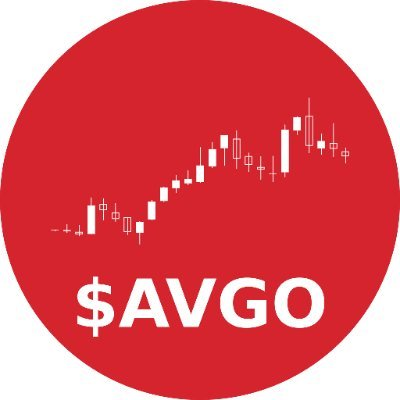

$AVGO Observer
@AVGO_X_
Keeping an eye on any topics about $AVGO. All comments are for informational purposes only and does not constitute investment advice. DYOR!
60 关注者108 正在关注

每日更新的 Broadcom (NASDAQ: AVGO) 中文投资资讯站

$AVGO Observer
@AVGO_X_
Keeping an eye on any topics about $AVGO. All comments are for informational purposes only and does not constitute investment advice. DYOR!
这个分歧挺关键的。Arcuri 讲弹性有道理，但超大规模客户已经用长约和预付款锁 HBM，说明自研路线下了重注。短期波动难免，关键还是看明年订单有没有真的松动。
R&D is the one line item you can't fake. Nvidia outspending AMD, Broadcom and Marvell combined says a lot about where the gap sits. At $11.8B, Broadcom is still spending like a company that intends to stay in the race. $AVGO
That supply-demand gap is the key point. If hyperscaler demand really is running ahead of supply, 15x forward earnings looks more like fear pricing than a growth call. Still, the $325.48 close stayed under the 20-day at $338.95, so I'm waiting for a hold first.
A 100 Tbps switch you can hold in one hand says a lot about where the bottleneck moved. The interesting line here is not the cadence, it is the discipline: ship a chip only when it is worth producing. For Broadcom, that restraint is part of the networking story. $AVGO
博通把 VMware 又往低端推了一步：vSphere Express 只面向 128 核以下的场景，vMotion、分布式交换机这些核心能力都给了，走按核订阅、分销渠道。说白了就是把原来够不着 VCF 的中小客户也圈进来。软件这条线要是能放量，对 AVGO 的意义不比 AI 芯片小，只是兑现要慢一些。$AVGO
A new switch vendor taking on the Mellanox/Broadcom duopoly in scale-out fabric is a bold bet, and the funding suggests someone believes the timing is right. The hard part was never the single-switch spec, it is surviving at cluster scale. That is the test to watch. $AVGO
引用 @ebiken 的帖子
The 1.6T ramp gets the headlines, but the CPO constraints are the part that decides timing. Lasers, packaging and yields have to line up before co-packaged optics moves from demos to volume. The ramp, not the roadmap, is what to watch. $AVGO
@Sam_Badawi Arista's print makes the inference networking point hard to ignore. If that demand holds, Tomahawk's case gets easier, but it's still demand for the category, not a guaranteed share win for Broadcom. Worth watching how much of it actually lands in Ethernet.
OpenAI 一边跟博通合作自研加速器，一边又传出要直接买 Google 的 TPU，这事有意思的地方不在站队，而在客户越来越不把鸡蛋放一个篮子里。对博通来说，TPU 本来就是它造的，自研那条线也在它手里，两边都不算丢单，但份额叙事得打个折——报道还没获双方证实。$AVGO
12/9盘后财报看点：AI芯片收入能否兑现217亿美元指引，关键还是看下一季指引够不够陡。上一季167亿这个基数摆在那，环比能不能继续往上走，比单季超不超一点更重要。
Concentration is the right worry here. Custom XPU work is sticky, but when a handful of customers drive that much of the AI story, one roadmap change matters more than a quarter of demand noise. Integration helps, it doesn't remove that single point of failure. $AVGO
The NVLink Fusion pressure is the part to watch. If custom ASICs get pulled toward Nvidia's interconnect, Broadcom's Ethernet story has to win on openness and scale, not just silicon. Still an open question, not a settled shift. $AVGO
引用 @benitoz 的帖子
Delay risk is fair, but the v8t offset matters. Google leaning longer on the older gen stretches the tail rather than killing the cycle. The real squeeze is how much runway v10 leaves v9 once it lands.
Marvell 1150 亿美元全股票拿下 Lumentum，这步棋是冲着光互连整条栈去的。对博通来说，DSP 和 CPO 的对手一下子变完整了，不过交割要到 2028 年上半年，短期订单还谈不上直接冲击。周一 MRVL 跌了 13%，AVGO 只跌 1.2%，市场先把账算在了买家头上。$AVGO
Yeah, that's the tension. Tightness reads as demand, but it leaves less slack if anything slips.
Tight ABF and MLCC supply reads like demand is still pulling hard, but for AVGO it also means lead times and costs are worth watching. Tightness helps the demand story, it does not remove the delivery risk.
这个筛法挺实在的，先看业绩确定性和资产负债表，再谈估值。不过周五 AVGO 也跟着跌了 5.5%，筛出来不等于跌不动，板块回调时照样一起走，仓位还是得留点余地。
The two-leg setup is the point here: custom XPUs on one side, merchant silicon for AI networking on the other. $326.08, below all three moving averages, so execution has to do the talking. $AVGO
CW laser doing most of the heavy lifting here is the part that stands out. If that volume ramp actually ships, optical demand is real, but the test will be yields and lead times, not the forecast chart alone.
明天 AMD 盘后财报，收入指引是一回事，我更在意它对 Helios 机架量产怎么表态。毕竟 $AVGO 那条 580→1150→2300 亿美元的 AI 半导体指引，一年翻一倍，机架组网铺不开就只是纸面数字。先看 AMD 怎么说，再看 12 月 9 号博通自己怎么交代。